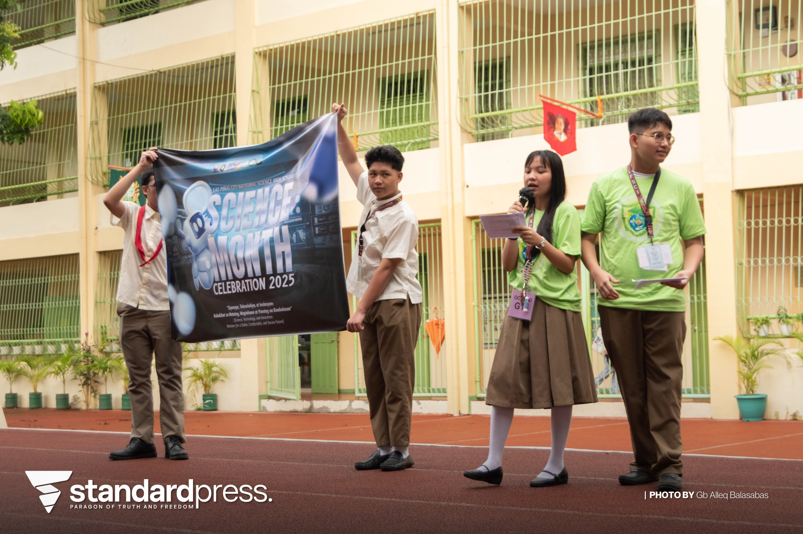
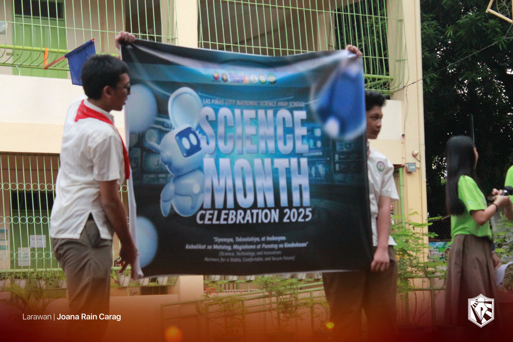

Main Page
Main Page  ICT
ICT  AP
AP |

Credits: Lpress |
Credits: Micah Jimenez |
|

Credits: Ang Paham |
B. Reflection
The two most important things I learned is probably the importance of doing things early and also how teamwork really does lead to the dream work. We started working on the Wins Corner quite late, and then there were class suspensions, which is why we had to rush. But still, thanks to the combined efforts of everyone, we were still able to make the Wins Corner look good, and we even won. I believe if we started even earlier, it would have even been better. I will apply this into my everyday life by always preparing ahead of time, and by cooperating with others.
I participated in the science quiz bee and won 2nd place. I also participated in the school based reseach fair. Also, for our wins corner, I was among the ones who worked on the frame of the board. Apart from that, all of us also submitted a poster.
If I were to teach my classmates about science, it is a subject that focuses on the fundamental rules of the world. In science month, we had many activities related to science and technology.
It is important to have an event for each subject so there would be a time when students focus specifically on the subject and learn more about it. The science month events are important, especially also considering that our school is a science school. It a chance for the students good in that area to also be recognized.